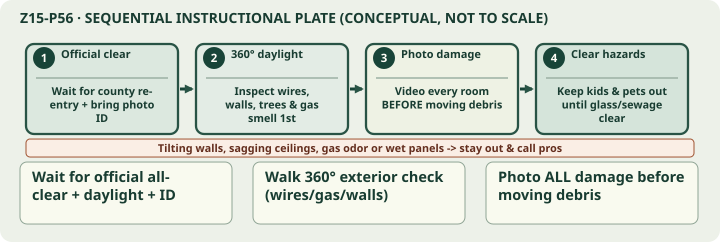

Z15-P56 · Disaster scenarios · New manuscript
Follow official re-entry orders and safe post-disaster inspection sequences
Prevent preventable post-disaster injuries during emotional homecomings after storms, fires, floods, or hazmat evacuations.
When it applies · Any household returning home after a mandatory or voluntary disaster evacuation.
Equipment · Official local all-clear announcement, photo ID (often needed at neighborhood checkpoints), boots/gloves/N95, flashlight, and camera.

Actions
- Wait strictly for official county/city re-entry authorization (bringing photo ID and proof of address for law-enforcement checkpoints) and return in DAYLIGHT so structural damage, downed wires, and road washouts are clearly visible.[D14, D05, D08]
- Walk a complete 360-degree exterior inspection BEFORE unlocking the door—checking for downed utility drops, leaning walls, shifted foundations, broken propane/gas lines (rotten-egg odor → leave immediately!), and hanging storm-broken tree limbs overhead.[D05, U11, D03]
- Photograph and video ALL exterior and interior damage thoroughly BEFORE moving debris or beginning cleanup for insurance and FEMA assistance, and keep children and pets safely away until broken glass, sewage, ash, and utility hazards are fully cleared.[D16, D05]
Failure recognition · Driving around a police checkpoint at dusk right after a flood or tornado and stepping straight into an energized flooded hallway.[D14, D05]
Verify · Confirm official all-clear received, daylight 360-degree exterior utility/structural check passed, damage documented visually, and kids/pets kept clear.[D14, D16, D05]
Stop or change course · Any visible structural tilt, sagging ceiling, gas odor, sparking line, or submerged breaker panel halts entry immediately—step back and call utility/pros.[D05, U11]
Evidence and editorial notes
- D03 · FEMA / Ready.gov · Tornadoes (current web edition)
- Section: Tornadoes > Watch vs Warning, Safe Room Selection, and Post-Storm Hazards · Conditions: Developing supercells, Tornado Watches, and Tornado Warnings
Support: Act immediately on a Tornado Warning by moving to a FEMA safe room, storm shelter, basement, or lowest-level small interior room away from windows; protect head/neck from flying debris, never shelter in vehicles/mobile homes or under overpasses, and watch for downed power lines and gas leaks afterward.
Limitations: Outdoor sirens are designed to alert people outdoors and may be inaudible inside insulated homes during storms. · Conflicting evidence: None; aligns with E17 and NWS-TORNADO.
Editorial note: Core tornado shelter-selection and post-storm hazard evidence in Z15. · Specialist reviewer: Meteorology and emergency management
Primary source · checked 2026-11-24 - D05 · FEMA / Ready.gov · Floods (current web edition)
- Section: Floods > Flash Flood Evacuation, Turn Around Don't Drown, and Re-Entry · Conditions: River flooding, urban flash flooding, dam/levee risk, and post-flood return
Support: Evacuate early when ordered, move to higher ground immediately on Flash Flood Warnings, never walk or drive through floodwater (6 inches knocks down adults; 12 inches carries most cars), and never enter flood-damaged homes until electrical, gas, and structural hazards are cleared.
Limitations: Floodwaters commonly contain raw sewage, fuel, submerged debris, and energized downed wiring. · Conflicting evidence: None; aligns with T07, T16, and N10.
Editorial note: Core flood evacuation, water-avoidance, and safe re-entry evidence. · Specialist reviewer: Emergency management and flood hydrology
Primary source · checked 2026-11-24 - D08 · FEMA / Ready.gov · Wildfires (current web edition)
- Section: Wildfire Evacuation Tiers, Go-Now Triggers, and Defensible Prep · Conditions: Wildland-urban interface (WUI) communities and forested corridors
Support: Follow local Ready-Set-Go evacuation stages, pre-stage vehicles facing outward with fuel topped off and go-bags loaded during Set/Watch notices, evacuate immediately on Go orders along official open routes, and never return until fire officials lift closures.
Limitations: Fire spread can shift direction in minutes with wind changes; waiting to see flames often leaves exit roads blocked. · Conflicting evidence: None; integrates with T13 and C19.
Editorial note: Grounds wildfire evacuation readiness and route-abort decisions. · Specialist reviewer: Wildland fire management and emergency services
Primary source · checked 2026-11-24 - D14 · FEMA / Ready.gov · Evacuation (current web edition)
- Section: Household Evacuation Logistics, Go-Bags, and Shelter Registration · Conditions: Mandatory or voluntary evacuations across multi-hazard disasters
Support: Pre-pack grab-and-go kits (medications, IDs, water, warm layers, chargers, pet gear), maintain at least two independent route options out of the neighborhood, notify out-of-area contacts upon departure, and register status through official shelter/Red Cross Safe & Well channels.
Limitations: GPS navigation apps can route evacuees onto flooded, smoke-blocked, or closed secondary roads; follow live law-enforcement and DOT closures. · Conflicting evidence: None; operationalizes T13 into household evacuation execution.
Editorial note: Core evacuation execution and accountability evidence in Z15. · Specialist reviewer: Emergency management and transportation safety
Primary source · checked 2026-11-24 - D16 · FEMA / Ready.gov · Financial Preparedness and Vital Records (current web edition)
- Section: Vital Documents, Cash Reserves, Insurance, and Post-Disaster Recovery · Conditions: 30-day resilience planning and post-disaster household recovery
Support: Keep waterproof physical and encrypted offline digital copies of IDs, medical lists, prescriptions, insurance policies, deeds, and emergency contacts alongside small-denomination cash so household transactions and assistance claims survive bank/internet outages.
Limitations: Online-only cloud portals are inaccessible during power and telecom outages. · Conflicting evidence: None; critical pillar of prolonged 30-day household resilience.
Editorial note: Grounds documentation, cash liquidity, and recovery staging cards. · Specialist reviewer: Emergency management and household continuity
Primary source · checked 2026-11-24 - U11 · FEMA / Ready.gov · Hazardous Materials Incidents (current web edition)
- Section: Natural Gas Leaks, Fuel Odors, and Utility Shutoff Boundaries · Conditions: Suspected household natural gas, propane, or fuel-oil leak
Support: If you smell rotten eggs/mercaptan or hear hissing near gas lines, leave the building immediately without toggling light switches or using phones inside, and call 911 and the gas utility from outside; never turn gas back on yourself.
Limitations: Only the gas utility or licensed technician may restore shut-off gas service and relight pilot systems safely. · Conflicting evidence: None; critical residential utility stop condition.
Editorial note: Establishes strict utility-leak evacuation and licensed restoration gates. · Specialist reviewer: Gas utility safety and fire service
Primary source · checked 2026-11-24
Source lineage · FEMA Ready.gov Evacuation and Recovery; new manuscript · Classification · New manuscript.